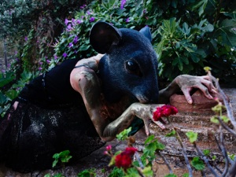

2013 - Crises & Paganism
This is not a biennale, it is a symposium where Art and Philosophy meet with the extraordinary energy of Mykonos.
Our ambition is to create a unique event where personalities are invited to communicate the spirit of humanity.
Today’s economic disaster presses the populations into depression, a dead-end of confusion darkness and anonymity.
Before finding any solutions we must find ourselves. Living poetically, celebrating human existence, communicating with art and philosophy, walking in this territory of culture, history, and genuine vitality we will manifest ideas, strength, enthusiasm
and optimism to look together for the DESTINATION.
Like Baudelaire’s Kythera and Cavafy’s Ithaca, Mykonos is a symbolic island: the transcendental land of the alternative thought.
With the Mykonos Biennale we will create a historical event with momentum where the universal spirit of art, liberated, will regenerate in the eternal spring of life.
Statement
The theme of the 2013 Mykonos Biennale is a parody of the Crisis Industry’s choice of Greece as a main protagonist in their current financial disaster scenario. The Crisis punishes in an exemplary way paganistic Greece, who is idly dancing and drinking as the “southern latino lover”, the grasshopper of Aesop’s story. Greece as the juvenile Pinocchio is persuaded by the cat and the fox, the northern rich buddies, to sell his books to join their party while the old Geppetto must sell his coat to pay the bills. With the broken Geppettos, the uprooted forests of Chalkidiki, the blackened valleys of solar panels, Greece is depressed and bullied by the global media. “Idleness is the mother of evil” and Greece is unemployed. 17 million tourists want to see her swim, sing and dance because, oh what a coincidence! It’s summer, Adonis with Persephone are back on earth feasting together with the guitar playing grasshopper. Is belly dancing considered a legitimate job? And if yes, when do the people qualify for their pension? Is retirement obligatory? Can the hungry bear cubs dance? Can old men dance? Was the empress Theodora the daughter of a bear tamer? Was emperor Justinian the nephew of an Albanian immigrant? What connects Europe with the Holy Alliance? Has the age of the empire returned? If money is the Crisis and Nature is paganism, is this relationship an oxymoron? As both Annas in Brecht’s Seven Deadly Sins, the role of morality change at the beat of global hypocrisy. As the birds sing, the waves unravel and Pinocchio’s fairy is disguised as Art and wrestles with Aladdin’s genie and the three consumer wishes. To be continued in alternative Mykonos where the renowned nudist emperor will visit with his new clothes.
Events
20th June 2013
21st June 2013

22nd June 2013

23rd June 2013

Venues
The venues of the Mykonos Biennale are located in many strategic points to initiate the visitor into the cultural inheritance of the island. The contemporary and international art works will blend with traditional culture in a haunted dialog hosted by the ghost of the past creating together Historical Time.
Town Hall (The Russian House)
Then the art installation Rendez-vous was presented, followed by the Flower Project Part 2 by the «Flower Girls» Anna Pangalou sing the aria John Cage from the main balcony of Town Hall.
Old Port
The Sylvia Macci dance group presented "Yaloudes" a work inspired by Mykonian sea ghosts.
The Windmills
Nobuhiro Ishihara - Installation: Dragon is reborn as a Cetus κητος from the Japanese to the Greek mythology. Lucas Samaras - Video installation in the windmill.
The Archeological Museum
Takis & Lydia Venieri
Big White Gallery
Yiannis Gazetopoulos, Alexis Fidetzis, Olga Goulandris, Patrick Swirc, Robert Flynt, Lydia Andrioti, Lydia Venieri, Christos Markogiannakis, Antonis Volanakis,Theodoulos Gregoriou, Fotis Sagona, Thomas Stavropoulos.
Delos
Alternative Baptism, a performance by Lydia Venieri and Adonis Volanakis accompanied by the music of Dimitris Vassilakis and the Sylvia Macci Dance Group. Lydia Venieri performed Words about Women by Betty Tompkins.
The Folklore Museum (The house of the Pirate Mermelakas)
Pato Hebert, Aleta Lee, John Henry, Dean Monogenis, Camila Santin.
Kouseyares church
Shashpour Pouyan & Pedro Tyler.
Lena's House
Andonis Volanakis, Pepa Prieto, Anita King, Manos Pontikakis, Rafaele Shirley.
School of Fine Arts
Works by Liana Anastasiadis, Lydia Andrioti, Panagiota Apostolopoulos, Leonidas Chalepas, Mark Hadjipateras, Marie Jacotey, Anita King, Esther Lemi, Christos Markogiannakis, Maria Nymfiadi, Costas Picadas, Fotis Sagonas, Cam Santin, Katerina Skassi, Alice Skoulikidis, Lydia Venieri, Iria Vrettos, Tassos Vrettos, Cindy Tower. The festivals inauguration ceremony was opened by the children's choir of the Music School "George Axiotis," conducted by Tina Psalida. Η παιδική χορωδία της Δημοτικής Μουσικής Σχολής «Γεώργιος Αξιώτης»,κάτω από την διεύθυνση της Τίνας Ψαλίδα άνοιξε την τελετή των εγκαινίων.
Venieri Mansion, Matoyanis, Mykonos Town
Anna Pangalos, Antonis Volanakis and Din Heagney perfom the poetry of Kurt Schwitters, Henry Miller and John Ashbery respectively.
Venieri House, Ano Mera
The Mystic Party with music by MICHALIS KOUNENIS and LEFTERIS SIKINIOTIS, and dance performances: The Last Supper by Lydia Venieri performed by the THE DANCE GROUP OF SYLVIA MACCI and Manage á Trois performed by Andonis V olonakis and the Flower Girls.
Municipal Gallery
Delos Revisited -A mosaic workshop for children was held by Irini Sirianou.
The Organic Vinyards of Paraportianos
Among the ancient vines of his organic vineyard, Paraportiani, Mr Nikos Asimomytis hosted a Dionysian feast for biennale. Dimitris Vassilakis his music for the ancient vines.
Cine Mando (Open air Cinema)
The Mykonos Biennale Art Video Film Festival.

Artists
Christina Katsari


Team

Lydia
Venieri
Andonis
Kioukas

George
Tsokopoulos

Maria
Papadaki

Adonis
Volanakis

Dimitris
Vassilakis

Ana
Pangalou

Tassos
Verttos

Sylvia
Macci-Varotsos

Michael
Skafidas

Fotis
Sagonas
Elefteria
Kotzaki

Christina
Spanos

Demeter
Stamatopoulou

Alexis
Fideztis

Yannis
Voliotis

Lydia
Andrioti

Panos
Kostouros

Annable
Aronis
Nikos
Asimomytis

Thanos
Vassilakis
Katie
Peyton

Lee
Wells

Tina
Psalida
Babis
Amoiridis
Sponsors

MUNICIPALITY OF MYKONOS

SCHOOL OF FINE ARTS
CINE MANTO

AVION FILMS

AΦRODITE MYKONOS BEACH HOTEL

HELLENIC SEAWAYS
QATAR AIRWAYS
AIRFRANCE

PARAPORTIANI VINEYARDS